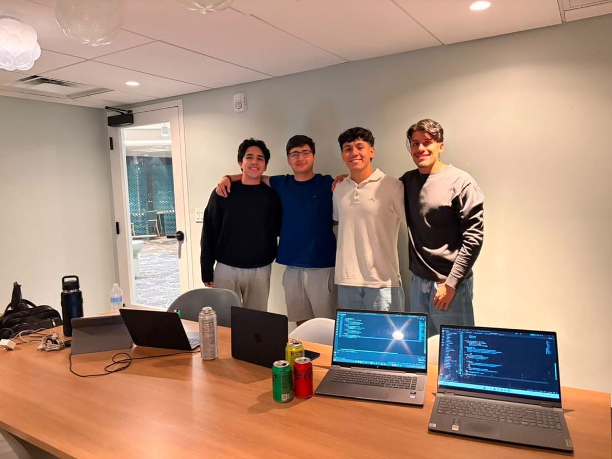
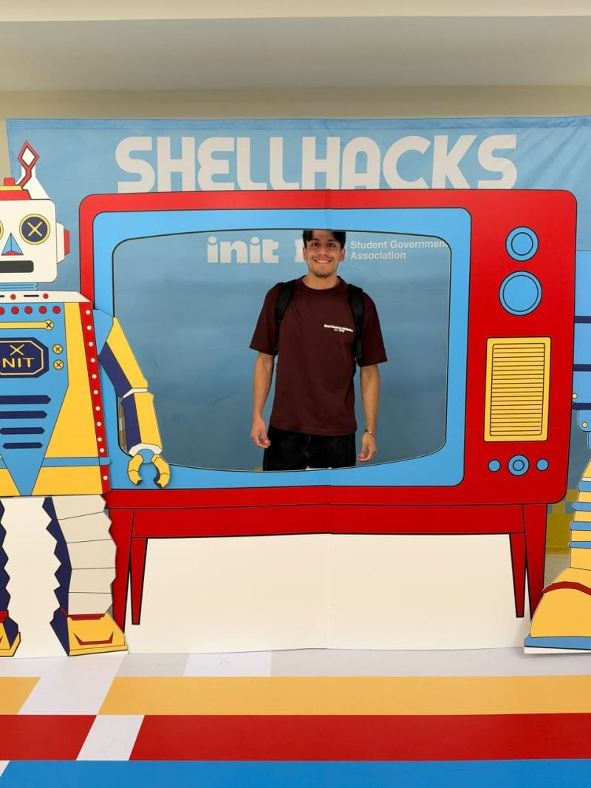

Security
Threat Analysis
Vulnerability Assessment
Incident Response
Security Hardening
Risk Management
Bachelor of Arts in Computer Science
Cybersecurity. Software.
Quantum Computing.
Cloud Computing. IT.
Driven by discipline and consistency, I turn hard problems into dependable, well-built solutions.
01 / ABOUT

I’m a senior Computer Science student at Florida International University, eager to turn academic foundations into hands-on professional experience.
Originally from Lima, Peru, I’m an international student who has studied across three U.S. universities. My journey in computer science has sparked a passion for cybersecurity, software development, quantum computing, cloud computing, and IT. I bring strong communication, organization, adaptability, and teamwork skills, along with the ability to work under pressure.
Cooperation, discipline, and persistence shape how I approach my goals. I’m committed to academic excellence, acquiring new skills, and continuous professional growth.
02 / EDUCATION
Three Universities · 2021 – Present
Florida International University · Miami, FL
Expected Graduation · August 2027
Dean’s List · August 2024 – May 2026
Micro-credentials · Leadership Agility, Fundamentals of Robotics
Doane University · Crete, NE
August 2022 – December 2023
Specialization · Information Technology and Security
Minors · Data Analytics, Business Administration
Athletic Director’s High Honor Roll · Fall 2022 – Fall 2023
University of Rio Grande · Rio Grande, OH
August 2021 – May 2022
Dean’s Honor List · Fall 2021 – Spring 2022
Cybersecurity (CodePath), Cybercrime, Programming, Data & Discrete Structures, Algorithm Techniques, Computer Architecture, Operating Systems, Network Security, Information Technology, Quantum Computing, Artificial Intelligence, Cloud Computing, Multivariate Statistics.
03 / SKILLS
Threat Analysis
Vulnerability Assessment
Incident Response
Security Hardening
Risk Management
Wireshark, Splunk, Linux, GitHub, VMs, Jupyter Notebook, Qiskit, RStudio, AWS S3, CloudFront, IAM, Microsoft Office
Spanish / Native
English / Fluent
Portuguese / Basic
04 / CERTIFICATIONS & TRAINING
Coursera
Mastercard · Forage
Jack D. Gordon Institute for Public Policy · FIU
AWS Academy
Cisco Networking Academy
05 / PROJECTS
06 / HACKATHONS
Collaborative, time-boxed projects

A team project for the Sperry Tech, Gemini API, and Tiger Data tracks that compares public utility construction plans to surface cross-utility coordination opportunities. I worked on backend and API development.
View repositoryAn ongoing quantum computing hackathon hosted by Qollab and IonQ. Project details will be added here once the event wraps.
In progress07 / PROFESSIONAL EXPERIENCE
Florida International University
Knight Foundation School of Computing and Information Sciences
Miami, FL
AUGUST 2026 – PRESENT
Computer Architecture · CDA 3102
SEPTEMBER 2026 – PRESENT
Quantum Computing Online · COT 4601
08 / LEADERSHIP & AFFILIATIONS
AUGUST 2025 – PRESENT
Community Member
Participate in career-readiness, technical communication, and hands-on skill-building workshops. Engage in hackathons such as ShellHacks to develop projects and connect with industry experts.
MAY 2025 – PRESENT · REMOTE
Cybersecurity Community Member
Develop hands-on skills in threat analysis, network defense, and vulnerability assessment through real-world cyber labs.
09 / CONTACT
I’m seeking OPT-eligible roles where I can gain hands-on professional experience, including Cybersecurity Analyst, Software Developer, Quantum Computing Researcher, and IT positions.
adrianrpg1@gmail.com